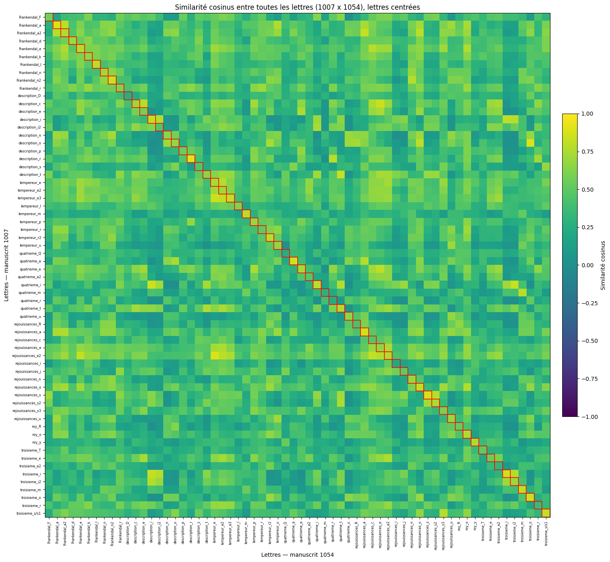

Playing with shapes
Experimenting shapes measurements and comparing handwritting from two different manuscripts written by the same hand
Abstract
The main idea is simple, the paleographer has the super-power to be able to say things about a manuscript just by looking at it. Like, he is able to guess the period, the localization and sometimes, even the copyist. Two or three sentences. State the question, what you measured, and the one result the figure below shows.
I have two manuscripts from the early modern period. One is a historical chronical written in french by Pierre-François Barberot when the other is a collection of literary pieces, written in a mix of french and local dialect. There is no signature on the second one, just an ex-libri from Pierre-François Barberot. Still, the handwritting is close. So, the idea was to do measurements and comparisions between the two manuscripts.
Result

The shapes
The full data is in data.csv.
| Item | Measure | Value |
|---|---|---|
| Example A | count | 42 |
| Example B | count | 17 |
| Example C | count | 8 |
How it was made
One short paragraph. Where the data came from, what produced the figure, and how someone could rebuild it. The full detail lives in the README.